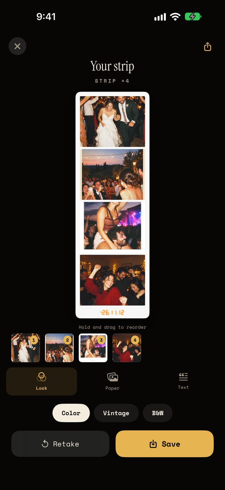
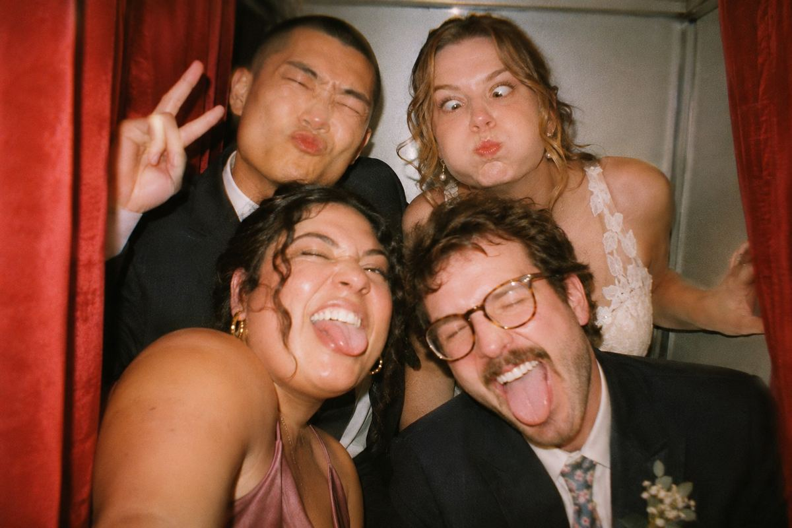

Wedding Photo Booth Ideas: Rent, DIY or Phone Booth?
Real costs for all three routes, a priced gear list and 20 ideas that don’t look cheap.

Short answer: The best photo booth ideas for a wedding reception are simple: one strong backdrop (a velvet curtain, dried flowers or a neon sign), good props and light from the front. Then pick a route: rent (most couples spend $425 to $1,000, per WeddingWire), build a DIY booth for about $68 to $277 in gear as of November 2026, or set a phone on a stand with a booth app.
This guide prices all three routes, lists the gear for a DIY booth, then gets into the parts that decide whether guests actually use it: 20 backdrop and prop ideas that don’t look cheap, lighting rules, placement, attendant or self-serve, and how everyone gets their strips home.
Wedding photo booth cost: rent, DIY or phone?
All prices below are as of November 2026. Rental figures come from WeddingWire’s photo booth cost guide, which puts the average at $650 and says most couples spend between $425 and $1,000. DIY gear prices are from Walmart.com listings, linked in the gear list further down.
| Route | Typical cost | Who runs it | Prints | Best for |
|---|---|---|---|---|
| Rented booth | $425 to $1,000 for most couples; packages start around $551 for three hours | Usually an attendant from the vendor | Usually included | Big weddings, couples who want zero setup |
| DIY booth | About $68 for light and backdrop stand; about $277 with a printer and 108 prints | You, plus a friend who checks on it | Optional | Couples with a free afternoon and a styled vision |
| Phone booth | About $35 for a ring light on a stand, plus your phone and an app | Self-serve with a sign | Optional, or digital only | Tight budgets, smaller weddings, after-parties |
Renting a photo booth: what the money buys
WeddingWire says a rental usually includes the booth itself, an attendant, and setup and breakdown, and that most booths give guests printouts. Props, custom signs and extra hours are where the price climbs. Booths rent by the hour, and its guide lists lower-end options at $140 or less and high-end ones at $2,000 or more.
Before you sign, ask the vendor:
- How many hours are included, and what does each extra hour cost?
- Is there a cap on prints, and what size are they?
- Does the attendant stay the whole time?
- How do guests get digital copies, and how long does the online gallery stay up?
- How much floor space and power does the booth need? WeddingWire notes it needs a power source and room for the booth itself.
- Can we see sample strips taken in a dim reception room, not a bright studio?
How to build a DIY photo booth for a wedding
A DIY booth is three things: a camera on a stand, good light on faces, and a backdrop worth standing in front of. Here’s a gear list priced on Walmart.com as of November 2026:
| Gear | Example | Price |
|---|---|---|
| Ring light on a stand | Bower 12-inch ring light with a stand up to 68 inches and a phone mount | $34.74 |
| Backdrop stand | 6.5 × 10 ft adjustable backdrop stand | $32.90 |
| Printer (optional) | Canon SELPHY CP1500, which prints from an iPhone over AirPrint | $159.00 |
| Ink and paper (optional) | Canon KP-108IN set, 108 prints at 4×6 | $49.95, about 46 cents a print |
| Camera | A phone or iPad you already own | $0 |
| Backdrop and props | Fabric, flowers or the venue itself (ideas below) | Your call |
That’s $67.64 without printing, or $276.59 with the printer and one pack of paper, against WeddingWire’s $650 average for a rental. The trade is your time and a friend’s attention on the night.
Setup in six steps
- Hang the backdrop on the stand, or pick a wall that already looks good.
- Mark a spot on the floor with tape, 3 to 4 feet in front of the backdrop, so shadows fall behind guests rather than on the fabric.
- Set the camera at eye level for an average adult. Start about 5 to 6 feet from the tape mark and adjust until a group of four fits without anyone cut off.
- Put the ring light right around the lens, or just above it, so light hits faces straight on.
- Plug everything in. Phone, light and printer should run on wall power all night, with cords taped down.
- Test at reception lighting, after dark, with two friends standing on the mark.
A real camera gives the sharpest photos, but then you need a way to show guests the result and share it. For most couples a phone or iPad running a booth app is the easier DIY.
The phone booth: an app on a stand
The lightest setup is a phone on a ring light stand, running an app with a booth mode: a countdown, a few shots in a row, and a finished strip. Guests tap once and pose. Your phone’s built-in camera timer works in a pinch, but you’ll get single photos, not strips.
Doing it with Filmsera
Filmsera’s Photo Booth is built for exactly this. It has 6 layouts (Strip ×4, Strip ×3, Filmstrip ×6, Grid, Duo and Print), a 3-2-1 countdown and pose hints, so guests know what to do without an attendant. When a strip is done, you can “Share strip,” “Share for Story,” save a “Print-ready” version for a printer, or “Add to film,” which puts it in your wedding’s shared film, so it turns up with everyone else’s photos at the reveal.


The limits: Photo Booth is part of the iPhone app, so the booth phone needs to be an iPhone, and guests who join your film in the browser take regular photos only. Strips saved on the free version carry a Filmsera watermark, which Filmsera Pro removes. And strips are digital unless you print them. If you’re hosting the whole wedding as a shared film, Filmsera for weddings covers setup and the film passes.
Filmsera’s Photo Booth turns an iPhone on a stand into a self-serve strip booth with a 3-2-1 countdown, pose hints and six layouts. Get Filmsera on the App Store
20 photo booth ideas for a wedding reception that don’t look cheap
The rule that keeps a booth elegant: one strong idea, in your wedding’s colors, done generously. A half-filled flower wall looks worse than a plain velvet curtain.
Backdrops
- Hanging dried flowers. Bunches of pampas, wheat and dried roses tied at different lengths from the stand’s crossbar.
- A velvet curtain. One deep color, floor length, with plenty of folds to catch the light.
- A greenery wall. Boxwood panels or real vines, best in a garden or barn venue.
- Sheer drapes with fairy lights behind. Soft glow, no clutter, and cheap to do well.
- The venue itself. A brick wall, a staircase, a library shelf or a barn door often beats anything you’d build.
- A neon sign. Your names, your last name or one word, against a dark wall.
- A shimmer wall in a single color. Champagne or silver reads elegant; rainbow reads prom.
- A studio paper roll. One bold color, such as terracotta or dusty blue, hung floor to ceiling for a magazine look.
- A living-room set. A vintage armchair or loveseat, a rug and a lamp, styled like a parlor.
- An oversized gilded frame hung in front of a plain wall, so guests pose inside it.
- Peel-and-stick wallpaper on two foam boards, in a pattern from your invitations.
- A muted balloon garland in two or three tones, shaped loosely rather than in a perfect arch.
- A streamer curtain in two colors, for a late-night, after-party feel.
- Paper fans or honeycomb in one color family, clustered in a corner instead of spread thin.
- A mirror booth. A large vintage mirror where guests shoot themselves; angle the ring light so it isn’t reflected.
Props
- A small basket of good props: vintage sunglasses, a couple of hats, a feather boa and a spare veil. Ten quality pieces beat fifty paper mustaches.
- A letterboard with your date or a line you change through the night.
- Old-school objects like a rotary phone, a film camera or a vintage suitcase.
- Signs guests can hold: “Just married,” “Best day ever,” or the name of the city you met in.
- Bubble wands or sparklers for an outdoor booth, if your venue allows them.
For a selfie booth, skip the stand: hang a large mirror or a styled backdrop, add a phone holder and a ring light at chest height, and let guests shoot on their own phones.

Lighting rules for a booth that flatters everyone
- Light comes from the front. Never put the booth with a window, a bright bar or a dance-floor light behind guests.
- Keep the light at the lens. A ring light around or just above the camera fills in faces and puts a catchlight in eyes.
- Turn off the spotlight overhead. Downlights directly above the mark leave dark eye sockets.
- Match the room’s warmth. If your ring light has a color setting, pick a warm white so the booth doesn’t look clinical next to candlelit tables.
- Separate guests from the backdrop. The 3 to 4 feet between them keeps shadows off the fabric.
- Want the party-snapshot look on purpose? Keep the ring light straight on and the backdrop dark, then shoot through a disposable-style film look for the warm color and grain. You get most of the charm without a flash going off in everyone’s eyes all night.
Where to put the booth, and when to open it
Put the booth where guests already gather but not in a walkway: near the bar or the edge of the dance floor, within reach of an outlet, and visible from the tables so people see others having fun. Keep it a little away from the speakers, so groups can actually hear each other plan the pose.
Open it after dinner, once speeches are done and people loosen up, and keep it open through the late-night stretch. A booth also pairs well with other late-night activities, and our list of wedding reception games has ideas that run alongside it.
Attendant or self-serve?
A rented booth usually comes with an attendant, which matters most for big crowds, printing queues and props that wander. A DIY or phone booth can run self-serve if you do three things: put up a clear sign, ask one friend to check on it every half hour (battery, paper, props), and keep the setup simple enough that nobody needs instructions twice.
Strike a pose! Stand on the X, tap the screen, and smile on 3-2-1. Grab a prop, bring your table, take as many as you like.
Printing and how guests get their strips
- Printed on the spot. Rentals usually include it. In a DIY booth, a compact photo printer does the job, but it prints one photo at a time, so put a friend in charge of the queue.
- Sent digitally. From a phone booth, AirDrop or text the strip to guests right away, or share a gallery link at the end of the night.
- Saved for the reveal. Add strips to a shared film so everyone sees them at the reveal, along with the rest of the day’s photos.
- Turned into a keepsake. Ask each group to print two strips, one to keep and one for an album with a pen beside it. It doubles as one of the best wedding guest book alternatives.
If you’d rather print the best ones later, our guide to printing your photos covers paper, sizes and where to order. And for every other photo from the day, the full guide to collecting photos from wedding guests compares all the options.
FAQ
How much does a photo booth cost for a wedding?
WeddingWire puts the average wedding photo booth rental at $650, with most couples spending between $425 and $1,000, and packages starting around $551 for three hours. A rental usually includes an attendant and setup. A DIY booth costs about $68 in light and backdrop stand as of November 2026, or about $277 with a printer and 108 prints.
Is a DIY photo booth worth it?
Usually, if you have a free afternoon and a friend who will check on it during the reception. You save hundreds of dollars and control the look completely. What you give up is an attendant, fast printing and having someone else be responsible for it all. For a large wedding with a big printing queue, a rental is often less stressful.
What do you need for a DIY wedding photo booth?
A phone or iPad on a stand, a ring light at the lens, a backdrop stand with fabric or flowers, tape to mark where guests stand, and a sign explaining what to do. Add a compact photo printer if you want prints, and an app with a booth mode for countdowns and strips. Run everything on wall power.
How long should the photo booth be open at a wedding?
Booths rent by the hour, and WeddingWire lists starting packages around three hours. That fits most receptions: open it after dinner and the speeches, then keep it running through the dancing and the late-night stretch, when guests are most relaxed and groups form easily.
How do guests get their photo booth pictures?
Rented booths usually print strips on the spot and often share digital copies too. With a DIY or phone booth, you can print on a compact printer, AirDrop or text strips straight away, or add them to a shared camera roll so everyone sees them together at the reveal.
Written by the Filmsera team
Filmsera is a shared disposable camera app for iPhone: create a film for your event, let guests join by QR code from the app or their phone's browser, and open the whole roll together at the reveal. Download on the App Store →
Photos in this article are illustrations created for Filmsera, not customer photos. App screenshots are from Filmsera on iPhone.